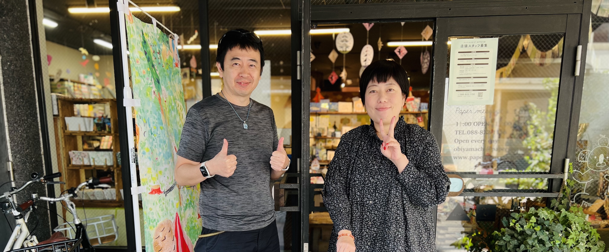
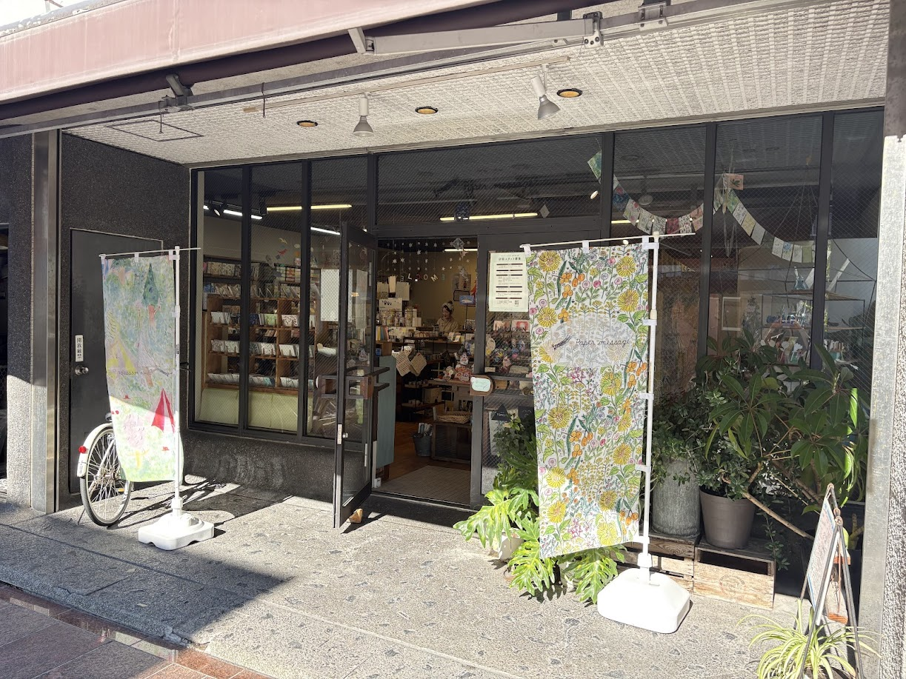
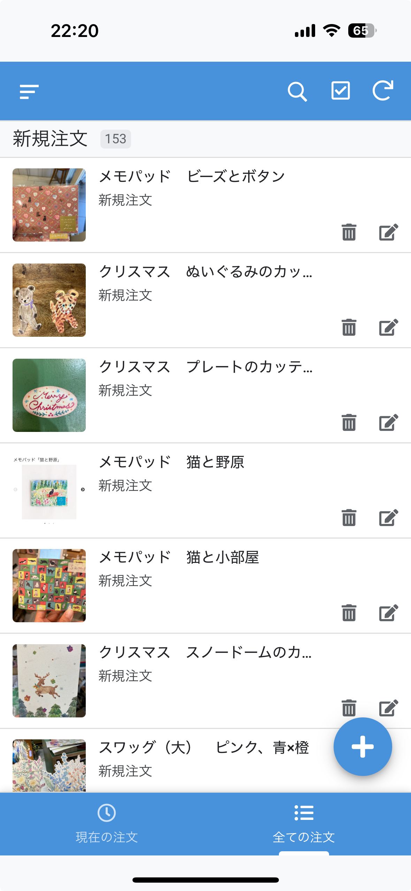
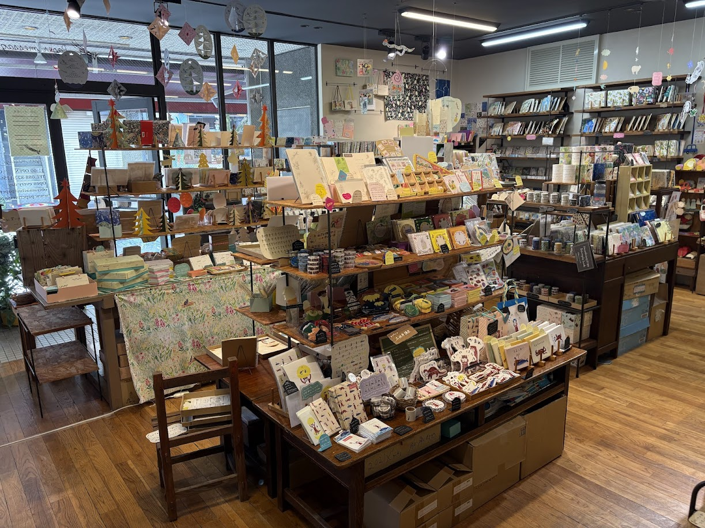
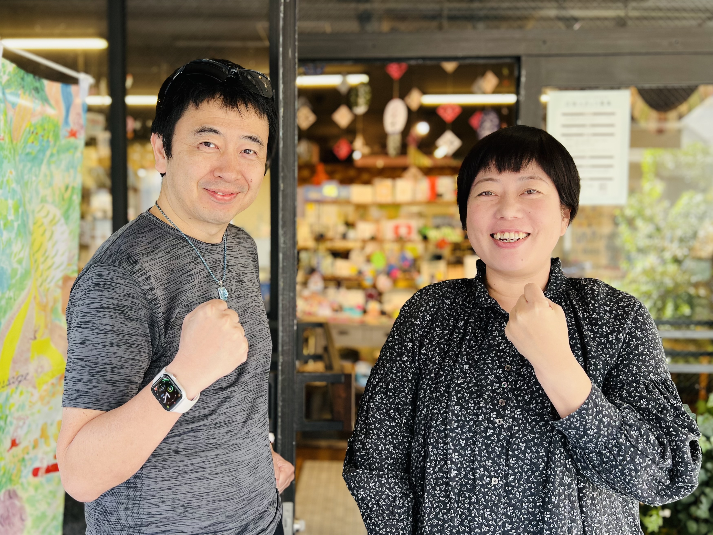
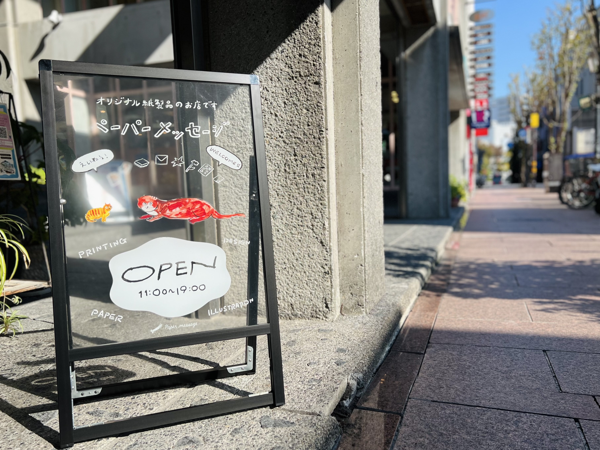
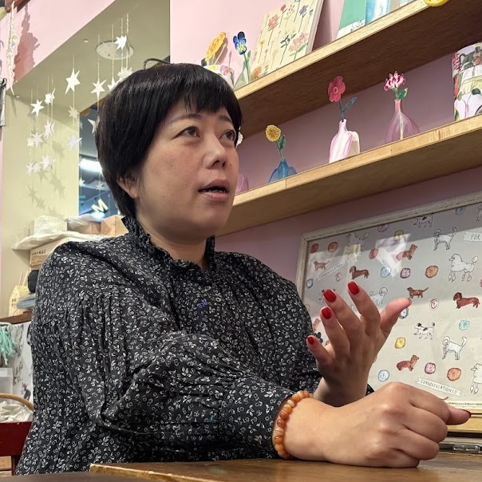
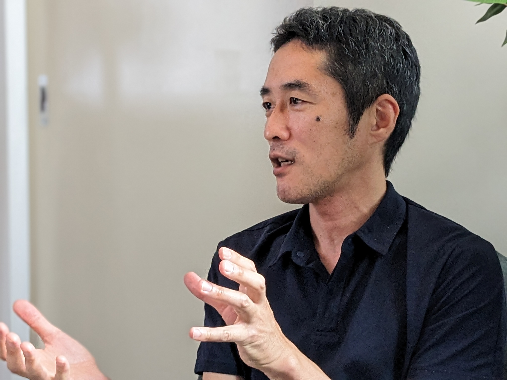

リソース投資事例
リソース投資が未来を開く
〜Paper message 代表・本山珠里さんインタビュー〜
中小企業が抱える課題は、複雑で多岐にわたります。限られたリソースの中でこれらを解決するには、従来のコンサルティングや単発的な支援だけでは限界があります。
そんな中、「リソース投資」という新しいアプローチで企業支援を行う当社の取り組みをご紹介します。
「リソース投資」は、単なるコンサルティングやアドバイスにとどまらず、当社が持つ知識やスキル、さらには時間や労力を無償・安価で提供する支援です。
このアプローチは以下の点で従来にあるものとは異なります：
①トータルな視点での課題解決
単一の問題だけでなく、会社全体を俯瞰しながら必要な改善策を提案します。
例えば、在庫管理の改善だけでなく、それに関連する工程管理や売上データの統合なども視野に入れています。
②柔軟性と即応性
応急処置として短期的な解決策を提供しながら、中長期的な視点で計画を立てる柔軟性があります。
本山さんも「困った時にすぐ提案してくれる」と、その即応性を高く評価してくださいました。
③信頼関係を基盤とした支援
「1億円預けても大丈夫」と言っていただけるほど、本山さんとの深い信頼関係を築いています。
このような関係性こそが、「リソース投資」の基盤となっています。


実際に構築した在庫管理アプリ
今回、本山印刷で実施したポイントです。
1. 在庫管理システムの導入
手書きメモとスプレッドシートでの在庫管理から脱却し、ノーコードで構築した在庫管理アプリを導入しました。
現場でも運用しやすく、業務効率が大幅に向上しました。
2. ホームページ正常運用への調整
旧来のサイトでは独自ドメインとの紐づけが不十分でしたが、適切な調整を実施。
これにより検索エンジンにも正しく表示されるようになり、オンライン集客力が向上しました。
これらの取り組みは、「リソース投資」の一部にすぎません。
私たちはお客様ごとの課題に寄り添いながら、より良い解決策を提案しています。
リソース投資によって明らかになった課題もあります。
以下は、本山さんの会社が抱える主な問題です。
工程管理
作業スケジュールや進捗状況が可視化されておらず、在庫管理にも悪影響
勤怠管理
タイムカードを手作業で集計し、給与計算ソフトに入力する非効率なプロセス
売上データの一元化
店舗レジとオンラインショップ間でデータが連携していないため、リアルタイム分析が難しい
属人化の弊害
特定のスタッフしか対応できない業務が多く、全体的な効率性を欠いている
これらは中小企業に共通する課題でもあり、「リソース不足」と「属人化」がその根本原因となっています。
本山さんはこれらの課題について3年計画での解決を目指しています。
1年目に計画立案、2年目に実行、3年目に検証というサイクルで進行し、KPI（重要業績評価指標）を設定して進捗を管理していく予定です。


本山さんは、「自分たちの価値観や思いを共有できる人と取り組みたい」という強い思いをお持ちです。
「リソース投資」は単なるビジネス支援ではなく、人と人との信頼関係から成り立つものです。
本山さん自身も、「改善王なら」と心から納得した上で進められる点が、この取り組みの大きな魅力だと感じています。
また、本山さんは「自分たちだけでは気づけない視点やアイデア」を得られることにも感謝しています。
それは改善王だからこその経験、視点があるからこそ成せることであると言えます。
「リソース投資」は、中小企業支援における新しい可能性を示しています。
一歩踏み込んだ形で企業と向き合い、その成長を共に歩むこのアプローチは、多くの中小企業が抱える課題解決への道筋となります。
本山印刷での取り組みは、その成功事例として今後さらに注目されるでしょう。
このような信頼関係と柔軟性に基づく支援モデルが広まれば、新たなビジネスチャンスや持続可能な成長へつながる未来が待っています。
当社はこれからも「リソース投資」を通じて、多くのお客様とともに未来を切り開いていきます。

取材にご協力いただいた方々
話し手

Paper message 事業部 代表
本山 珠里 さん
本山印刷株式会社の取締役であり、Paper message事業部の代表を務める。2000年に入社し、印刷会社の強みを活かしたペーパーアイテム専門店を展開。デザインから販売まで一貫して手掛け、ユニークな紙製品の開発に力を入れているほか、ネットショップの運営にも注力し、全国への販路拡大を目指している。印刷の魅力や可能性を広めるため、ワークショップやイベントも積極的に開催し、多くの人々に楽しさや新しい発見を伝える活動に取り組んでおり、その情熱は業界や地域全体に良い影響を与えている。
詳しくはこちら →聞き手

「聞く人」
ゆいなわ さん
「聞く人」として多彩な現場を経験し、対話を通じて相手が「本当に大切なこと」に気づくきっかけを提供する、聞くことのスペシャリスト。ポッドキャスト番組「聞く人ラジオ」では約130名のゲストと深い対話を展開し、多様な価値観や物語を届けている。前職の会員制図書館「アカデミーヒルズ」での司書経験や、舞台俳優、焼き鳥店店長、キャバクラのボーイなど多彩な職歴を活かし、インタビューやポッドキャスト制作、社内ラジオ運営など幅広い事業に取り組む柔軟性と創造性が特徴。
詳しくはこちら →